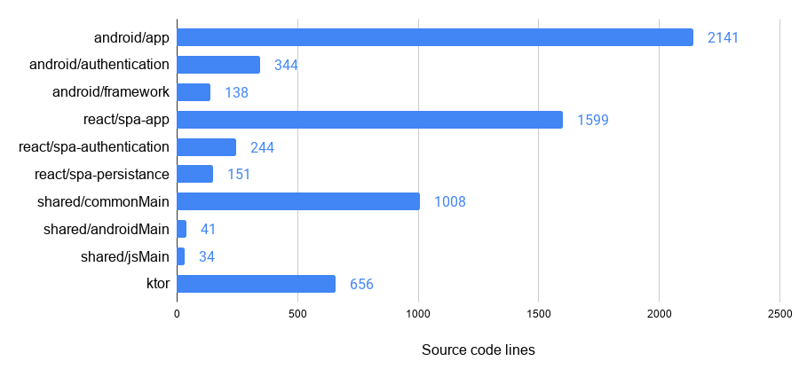
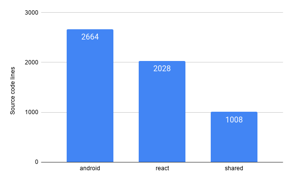
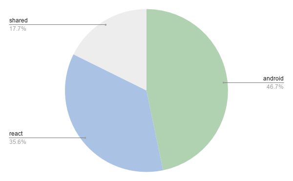
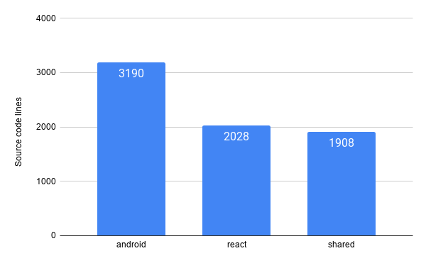
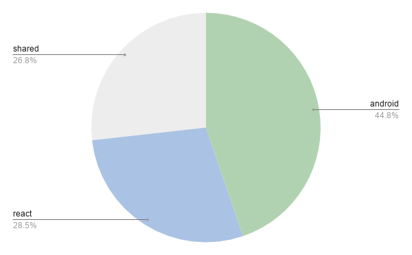
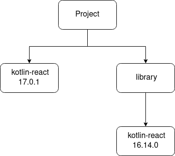
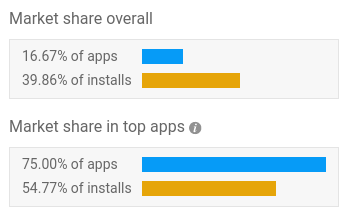

This article series contains parts of my thesis about Kotlin Multiplatform. The thesis is based on my Fuller Stack project which consists of an Android App, a Kotlin React.JS app and a Ktor server. The full thesis pdf can be found here.
Part 1 Introduction and the Server
Part 2 The shared module
Part 3 The Web App
Part 4 The Android App
Part 5 The Summary (This part)
Project code distribution
The code distribution will be counted by Kotlin source code lines meaning that empty lines and comments are not counted. Code like generated libraries (Dukat) and tests were not taken into account.

Most of the code resides in the client platforms, i.e. Android and React, respectively.


The platform modules contain a lot of code for the view and presentation layers. However, additionally these modules also contain a lot of implementations for the data layer. Some of the implementations could have been avoided by using Kotlin Multiplatform libraries which work on both platforms. Most notably in this project the networking, settings persistence and maybe the database could have been implemented fully in the shared module.
For projects with more business logic than the one for this MSc the shared module could potentially have more code compared to the client platforms. The Android and the React platforms are significantly different from each other which makes the code re-usage harder. If the project was comprised of two mobile platforms (Android and iOS) the code reuse would be higher because Kotlin Multiplatform for mobile community is much bigger. There exist more libraries for mobile and additionally the two platforms which are more similar to each other than Android and React.


The React module does not contain any tests so its lines of code did not change. However, the shared module almost doubles in lines of code because it contains the most tests. In my opinion tests should also be considered in the overall metric, because if the platforms did not share code, both platforms would probably contain production and tests code which would be approximately the same.
Hiccups / problems encountered
Kotlin/JS wrapper dependency
Some Kotlin/JS libraries (Mostly related to React.JS) are dependent on the official Kotlin wrapper libraries. From my experience I can state that some versions of the wrappers are not compatible with each other. Having a project like the one below could potentially not work correctly.

The project uses the Kotlin wrapper library for React.JS with the 17.0.1 version. Additionally, the project uses an external library which internally uses the same Kotlin wrapper library but with a different version. This discrepancy in versions could lead to unexpected errors. The solution would be to find a version of the wrapper and the library that are compatible with each other (maybe by trail and error).
Kotlin 1.4 update
Kotlin 1.4 was a feature release which brought major changes in the language. This update changed some things with how Kotlin multiplatform is defined making the project not compile. However, the fix for this was not hard. The most problematic part of the update was Kotlin/JS and its wrappers / libraries. I was forced to hold of on updating to Kotlin 1.4 until the wrappers and libraries I used were also up to date with this version. Because of this I think that in a project which uses Kotlin/JS feature release updates should not be performed straightaway.
Platform dependent implementation problems
The main focus of Kotlin Multiplatform is the mobile platforms (Android and iOS). Because of this some of the popular multiplatform libraries do not support Kotlin/JS. This forces some implementations to be done on both platforms instead of the shared module. Because of this separation special care has to be taken when creating these implementations in order not to create a difference between the platforms.
In this project the local database was the biggest problem when keeping the platforms aligned. The JavaScript database library Dexie had problems. The auto incrementing of the identifier only worked if the note data structure had an undefined value (similar to null in JavaScript) as the Id. Introducing a possibility for an undefined value in the shared module made no sense because it is only a local problem for the Kotlin/JS platform. The solution was creating an intermediary data structure between the JavaScript database and the shared module.
Additionally, the Android Room database disallows coroutine suspending functions when retrieving values from the database. This made the Kotlin/JS database even harder to implement, I won't go into the details because it is not relevant for this thesis.
Testing the shared module
Kotlin Multiplatform does not have mocking frameworks which means that all test doubles need to be created by the developer. This is what was done for the API and the database, however sharing these test doubles in tests from different modules is troublesome. For example, in order to use a test double for an Android module it needs to be defined in the main common module. Defining it only in a test module does not make it visible outside of the shared module. This results in some name space pollution because production code can access these classes even though they should just be used by tests.
Another problem stems from testing coroutines. There exists an additional library for testing coroutines. Unfortunately, it is only available for the JVM which makes it unavailable in the shared module package. This means that the shared module does not have officially supported utilities for testing coroutines.
Broken navigation to declaration
The IDE I used for creating this MSc project is called IntelliJ IDEA. It has a functionality called "Go to declaration". What it does is basically to open the file where the function/class etc. was declared. This makes it easier to reason about what is the implementation or what properties/functions (later called member) a class contains. Unfortunately, throughout working on the project I had a bug with this functionality. For example, navigating from the Android module to a Shared module declaration did not work as expected. I wanted to navigate to the exact Kotlin file where the member was declared, however instead of going to the Kotlin file I went to the generated Java class.
This is an ongoing issue with Kotlin Multiplatform. The oldest issue ticket I was able to find is three years old KTIJ-11683. Searching through the web I was not able to find a working solution because there is little information about this issue. This makes me wonder if this is something that happens seldom and is caused by my project configuration. This is not a make or break problem, yet it is a significant inconvenience when crossing the Android and Shared module boundaries.
Kotlin/JS RAM usage
Every time I was working on the React side of this MSc project I was forced to restart my browser from time to time. The reason for this was that my machines memory was disappearing bit by bit every time I made a change in the React module. In web development a popular practice is Live reloading which boils down to refreshing the page whenever a change is made. This can also be achieved with Kolin/JS. However, every time a live reload happened on the project, the memory usage went up a little bit. I suspect that the memory issue is related to live reloading however I do not have 100% certainty. This is just my personal intuition after developing the React module.
Summary
Kotlin/JVM
The JVM platform was the initial target for Kotlin making it the most refined part of the Kotlin programming language. In this thesis it was used for creating the Android app along with the Server. Because the JVM is already a widely established platform it benefits Kotlin because it can be used everywhere Java and other JVM languages can be used, for example desktop applications.
Kotlin/JVM is also the most popular way of using Kotlin. The language has mostly gained traction in the Android development circle, however it is expanding to the server side. Spring is a popular Java framework for creating robust enterprise applications and it also has an official support for Kotlin.
According to AppBrain Kotlin is used in 75% of the top 500 USA apps. Keep in mind that the scale of the Kotlin use is unknown, i.e. it could be the whole application or one file.

On the server side Kotlin is used at such companies as ING, Amazon, Adobe.
Kotlin/JS
As shown in this thesis Kotlin can also be used for creating websites or single page applications. It has the ability of being transpiled into JavaScript. On top of this, Kotlin can also call JavaScript code and use JavaScript libraries. Leveraging the JavaScript ecosystem is an important part of the front-end development because there is no point in reinventing the wheel.
All of this comes with some issues like the one described in the previous section, however I still think Kotlin has a potential for building JavaScript applications. Kotlin/JS is not the main focus of Kotlin and because of this it has a lot more rough edges than for example Kotlin/JVM. As time goes by I do believe that it will be more refined.
The framework I used for creating the web application was called React.JS which is popular in the JavaScript world. In the near future there will be an official way of building UI for the web which is discussed in the Compose section.
In my opinion for small projects or projects using Kotlin Multiplatform building web applications using Kotlin/JS might be the right choice. However, for more complex applications I would personally go with the standard which is JavaScript or TypeScript. These communities are much larger than Kotlin/JS which means that there are less issues and they are easier to be resolved.
Kotlin/Native and more
Kotlin/Native was not discussed in this thesis, however it is the main driving force behind Kotlin Multiplatform. Kotlin/Native makes it possible to use Kotlin for writing applications for the following platforms (This is not a complete list):
- macOs;
- iOS;
- Linux;
- Windows.
Besides all of the above platforms Kotlin can also be used as a scripting language. I have not had a chance to use it but I suspect that it could be helpful for small scripts which need to be run from time to time. The main issue would be that Kotlin is not an established language which means that the script is not as portable as for example bash.
Kotlin overview
It is a modern language which is not forced to provide backwards compatibility for choices made over 10 years ago (like Java). The Kotlin language has learned from the mistakes of other popular albeit old languages and connected their features into a cohesive package. Before releasing a stable version of Kotlin, Jetbrains was developing it for 6 years which allowed them to refine the language without the worry of backwards compatibility.
At its current state Kotlin can be used in a plethora of environments and the list just keeps growing. Kotlin Multiplatform offers one of a kind code sharing between platforms where the UI stays native. It might be a solution where an application needs to be released for multiple platforms.
Compose
Compose is a UI framework which works in a similar way that React.JS where the UI is driven by state. The Compose framework exposes a DSL for building the UI which looks in a similar way to how it was done in this project.
At first the framework was focused on the Android platform with the promise of replacing the cumbersome way UI is currently built on Android. In the same vein that Kotlin offers interoperability with Java, Compose also offers interoperability with the old Android UI system. Thanks to this Compose can be introduced into a project step by step, just like Kotlin in a Java codebase without a need of a ground-up rewrite.
Jetpack Compose is developed by Google with the focus being Android, however JetBrains has also developed different versions of Compose. The most mature is Compose for Desktop. Although still in alpha it proves that Compose can potentially be used for sharing the UI between platforms. Recently it has been announced that Compose will also be coming to the web with the help of Kotlin/JS. I think that the addition of Compose for the web will make Kotlin/JS more popular in the future.
When I stared working on this MSc thesis project Kotlin Multiplatform was still experimental and Jetpack Compose in alpha. Additionally, Compose was not supported in my IDE yet this prompted me to not use it in the Android app. If I were to start working on this project in a year from now I would definitely have chosen Compose for the Android UI. Depending on the state of Compose for web, I would have used it for the web UI.
Kotlin Multiplatform Mobile
In my opinion this is bread and butter of Kotlin Multiplatform, the mobile platforms have always been split. Currently the are two main ones: Android and iOS. The mobile platforms usually require two separate development teams where each one is focused on their own platform. Both the teams work on similar things but the only difference is the targeting platform. To reduce the development overhead mobile cross-platform solutions were created like Xamarin, React Native or Flutter which have a varying level of success.
All of the solutions mentioned above have problems which are UI related. Both of the Mobile platforms differ vastly in the way they create the UI, solutions like Flutter have to come up with a way in which both the platforms UI behave and look in a similar way. In some situations these cross-platform apps might look out of place because they use custom UI elements instead of using what the native platform has to offer. Keep in mind that this is an oversimplification because I am only focusing on the UI without other native parts of the applications.
Kotlin Multiplatform works in a different way because instead of sharing everything between the platforms it only focuses on the logic which for sure has to be the same between both of them. Thanks to this the UI stays native along with other native parts which means that both platform teams can leverage everything they have learned about their corresponding platform. The one big thing that is added is the Shared module which from the Android platform perspective will be easier to integrate than on the iOS platform.
In my opinion one big advantage of Kotlin Multiplatform is that if the solution does not meet the requirements, the Android platform will still have more or less a working App without Kotlin Multiplaform because Android also uses Kotlin. The iOS platform will be in a worse place because there will be a need to recreate the Shared module in their programming language. However, everything native or related to the UI already exists and can be used freely. In the case a different cross-platform solution was used the whole app would have to be rewritten from scratch on both of the platforms.
If you'd like to dive deeper into this topic check out my other articles